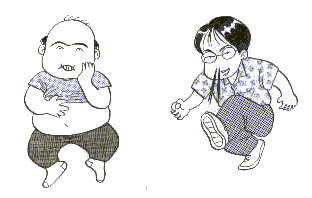

風邪をひいた。熱は出るわ、セキは出るわ、鼻水はでるわ、頭痛はするわで悲惨な状態。なにせ数分おきにセキ込み、５分おきに鼻水をかみ、１０分おきにブルブルッと身体をふるわせている（悪寒がする）。こうしてパソコンに向かっていても、モニター画面がぶれて見える。麻雀でいえば、配牌は悪いわ、ツモは悪いわ、放銃はするわ、親っかぶりはするわという状態。
女房は、「そうまでしてパソコンがやりたいのか」という。別に「そうまでしてやりたい」わけではない（キッパリ）。けっこうメールが来るので、それをチェックするために起動してるだけ。ただ、チェックが終わればサッサとシャットダウンして寝ればいいのに、ついＨＰの方も開いてしまうのがいけない。
さてそんなひどい状態の中にもかかわらず、新カテゴリーを立ち上げた。といってもそんな大げさなモノではない。世の中には桜井章一氏の雀鬼流とか、安藤満氏の亜空間打法、あるいは○○さんの（名前、ど忘れm(_
_)m）ツモ牌層理論など、いろいろユニークな戦法というか考え方というかフォームというか、、、、がある。以前からそれらについて感想など書きたいと思っていたが、どのカテゴリーで書くのがいいか迷っていた。
いちおう候補としては雀話か城壁編ではと思ったが、城壁編はどちらか云えば自分の考え方を書くところ。雀話は何切るなど多少は打ち方などについても触れるが、基本的には麻雀よもやま話。かといって新カテゴリーを立ち上げるほどのボリュームがあるとは思えないし、さて、どうすべえと迷っていた。
しかし昨晩、熱にうなされて寝ていると夢枕に陳魚門大神が現れ、「新学期も始まり、テレビも新番組がぞくぞく登場する。ならば取る道は一つであろう」とのご託宣をくだされた。テレビの新番組とどういう関係があるのかよく分からなかったが、お導きに従い新カテゴリーを立ち上げることにした。
|